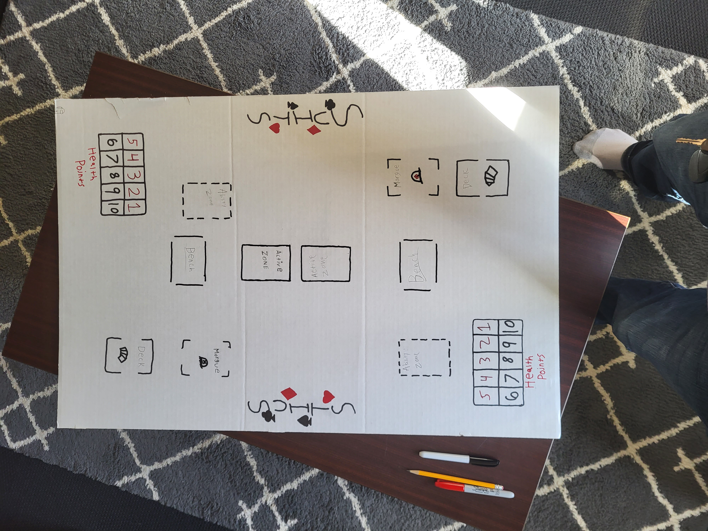
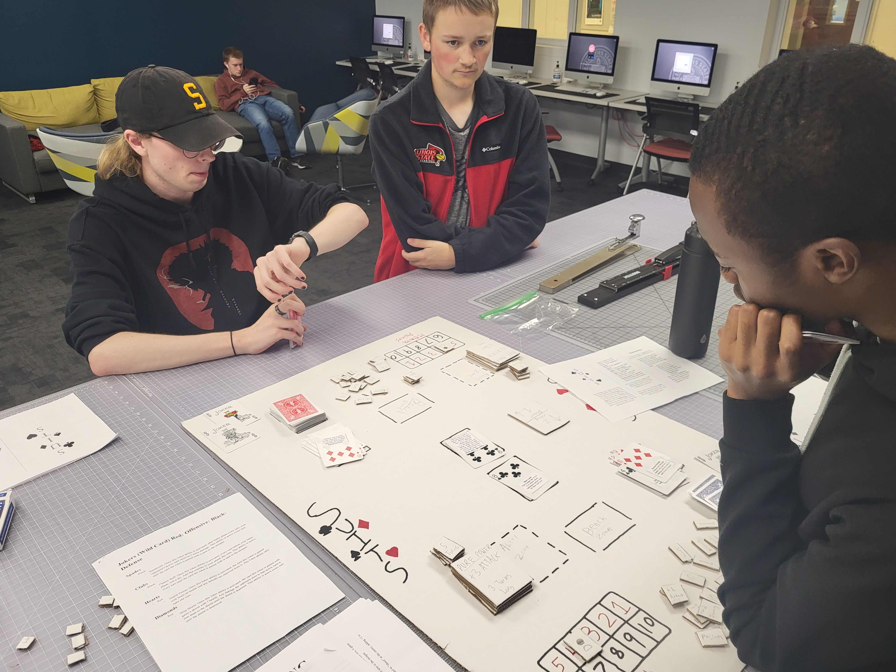
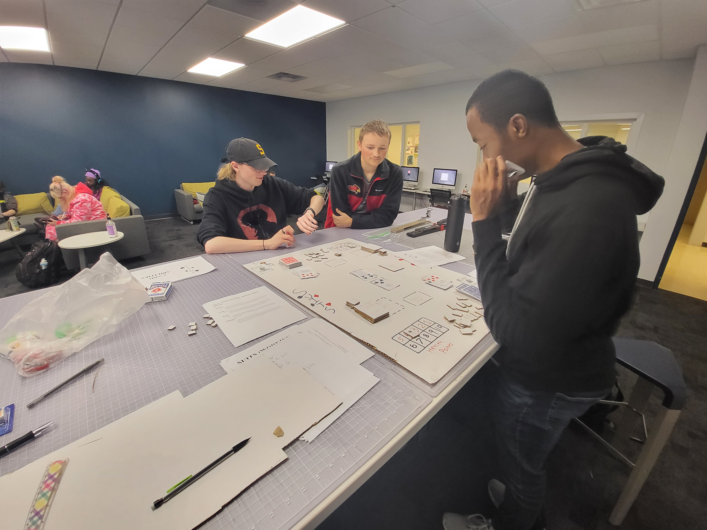
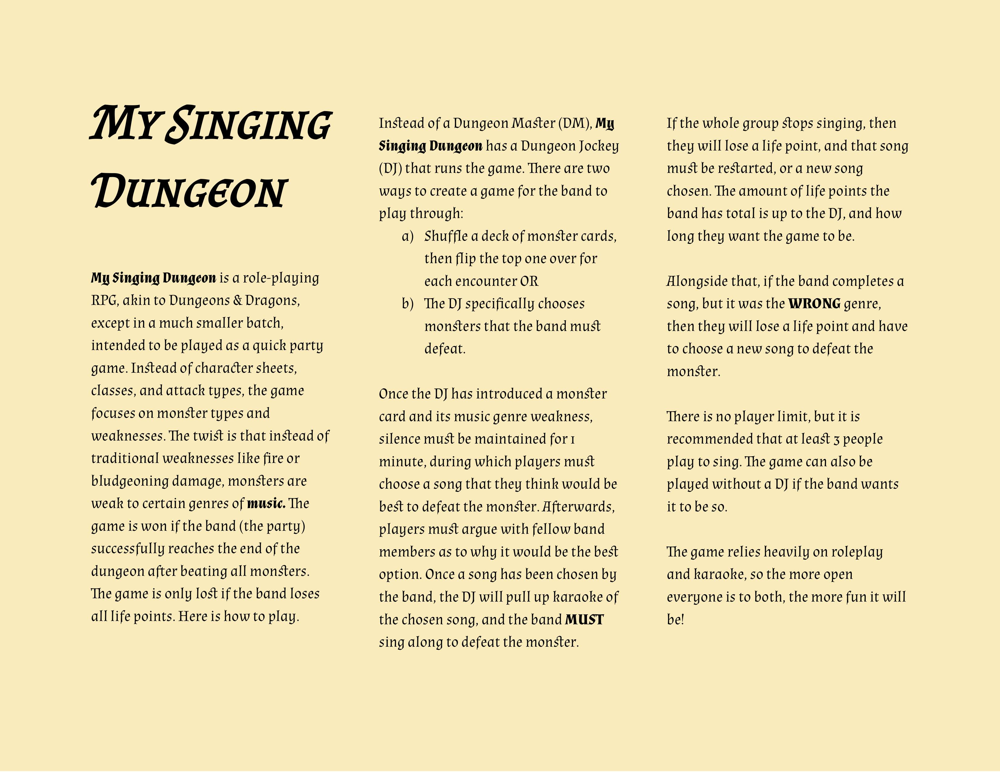
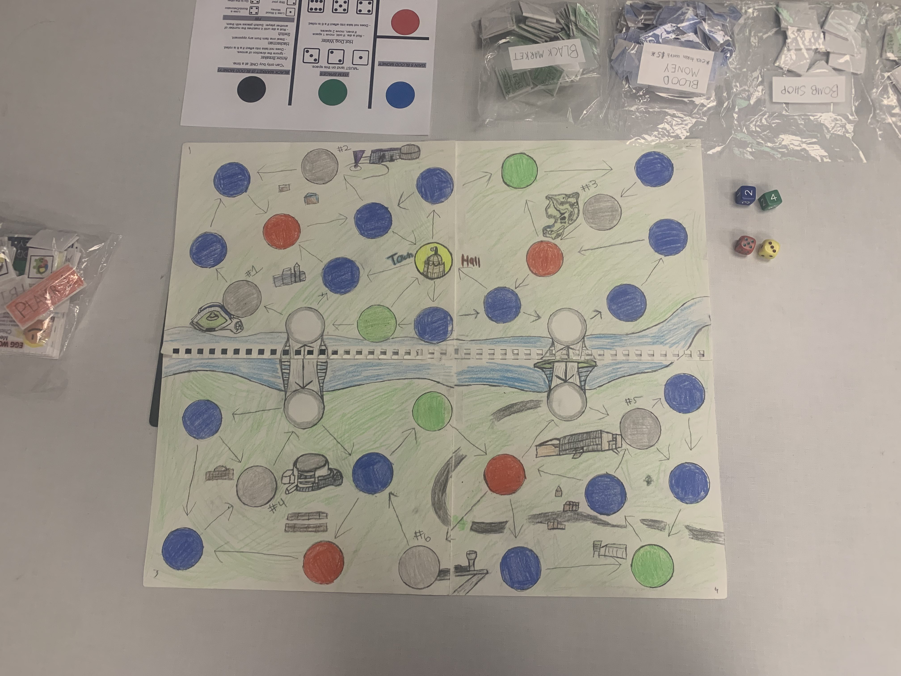
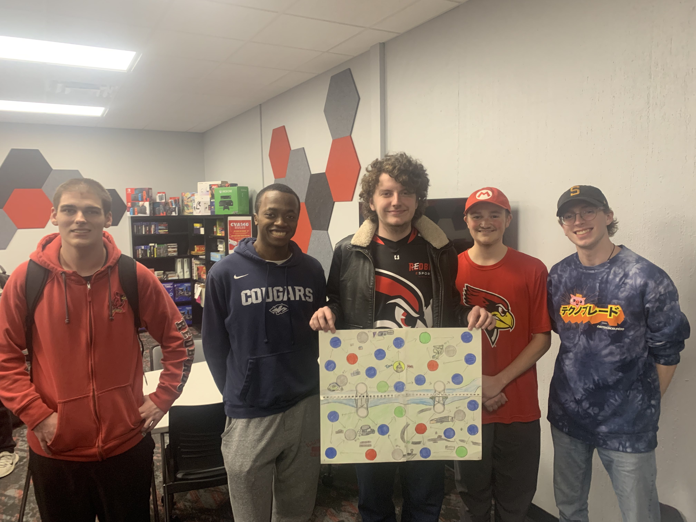
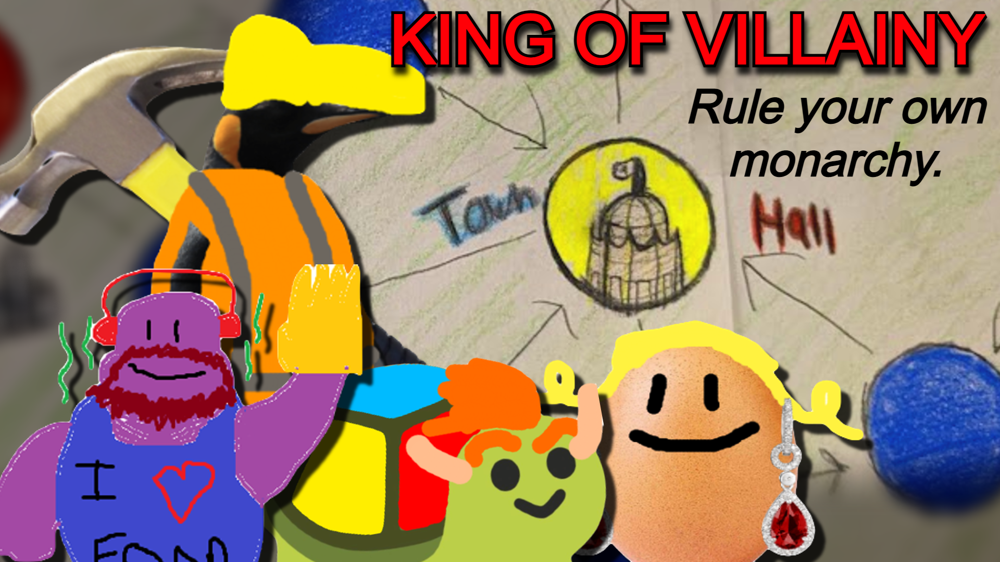

My Game Design Projects
So far in my college career, I've completed a Game Design 1 Course, and plan on taking Game Design 2 next semester (Spring 2023). Game Design 1 was a class focused on the principles of Game Design through the lens of board games, which can then be applied to video games. I worked on three projects, and here they all are:
SUITS
  {kind=link}
{kind=link}
{kind=link}
SUITS was the first project I worked on in Game Design 1. The focus of the project was the create a game with High Mechanics, but Low Context. This resulted in an extremely flushed out card battler, akin to Yu-Gi-Oh or Magic that we named SUITS. The cards are based on a normal deck of cards, but ever card has a unique ability that can be activated to beat your opponent and win the match.
My Singing Dungeon
The second project I created in Game Design 1 was My Singing Dungeon. The focus of this project was to create a game with Low Mechanics, but High Context. I decided to go a route similar to Dungeons & Dragons, but extremely simplified so I wouldn't have too many mechanics. This ended up in me creating a D&D-esque party game based around popular music. If you're interested in playing, you can download it FOR FREE alongside a few sample monster cards by clicking the image.
King of Villainy
  {kind=link}
{kind=link}
{kind=link}
The third and final project I created in Game Design 2 was King of Villainy, a game with High Mechanics and High Context. For this final project, my group and I decided to go the way of a board game similar to Monopoly, or a board game version of Mario Party. The goal of the game is to take over the town, AKA board area, and declare yourself "King of Villainy" by destroying the Town Hall after collecting two bomb parts. The game is available for download yet, but we hope to make it available soon.